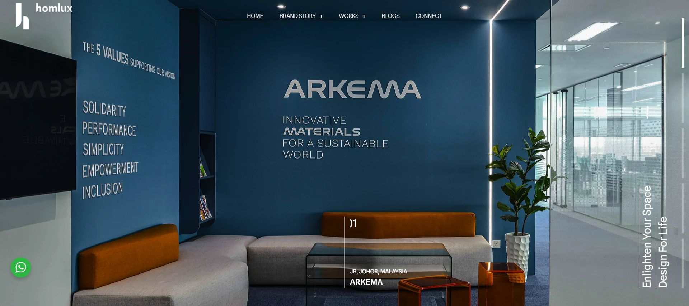
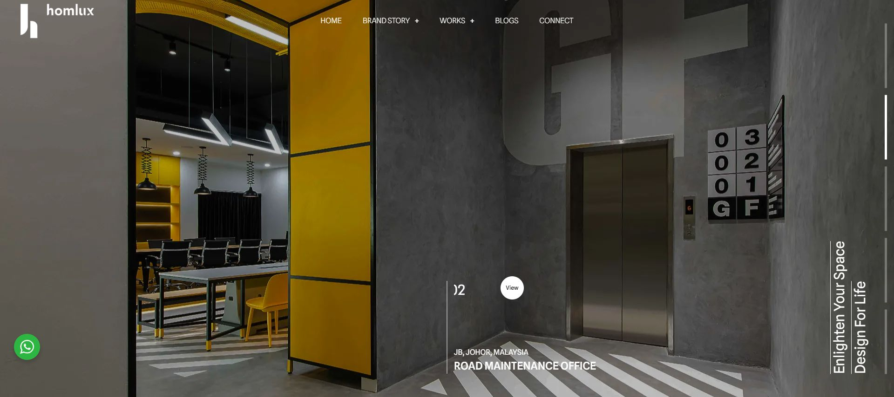
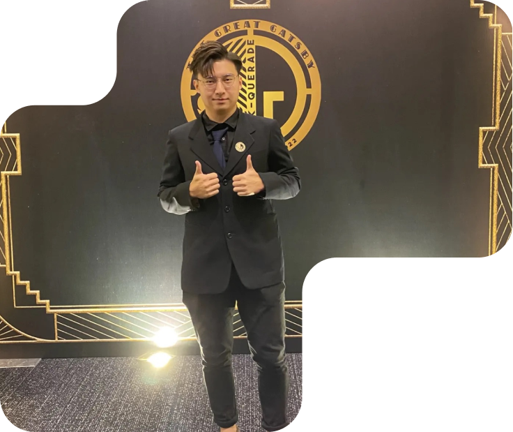
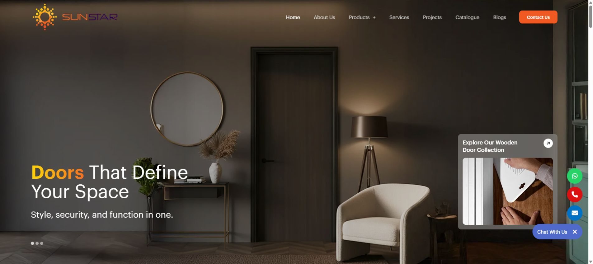
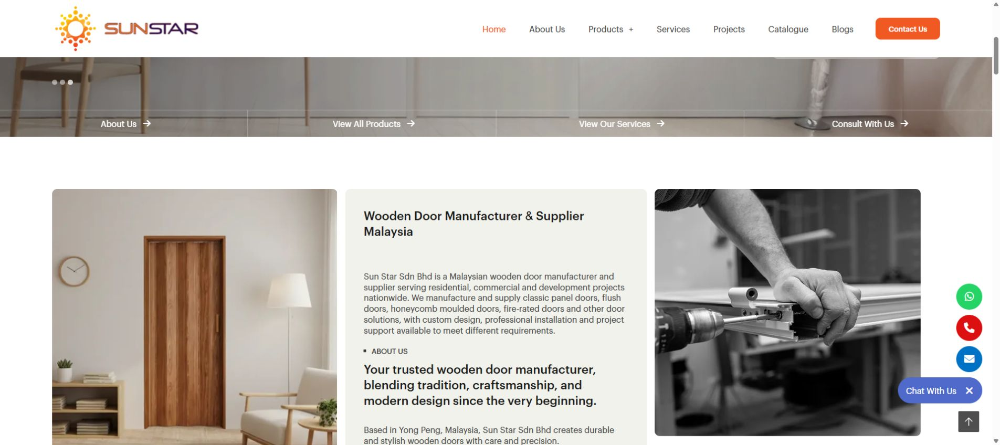
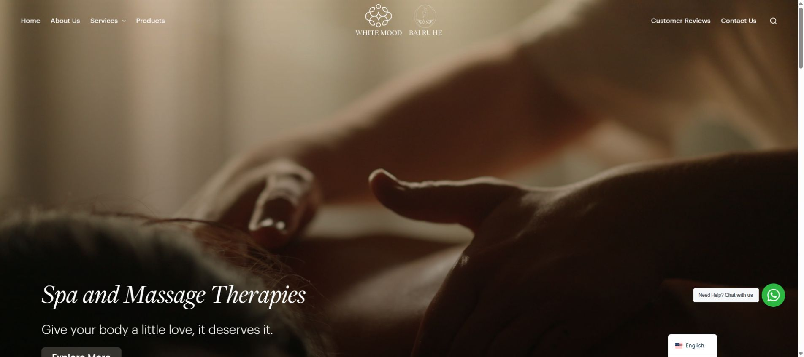
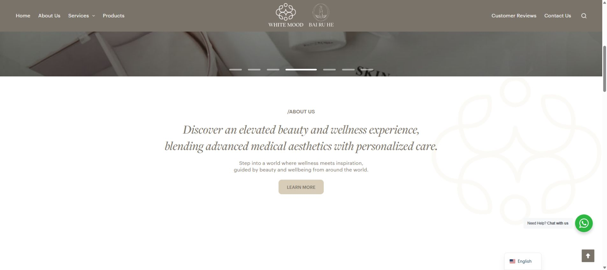
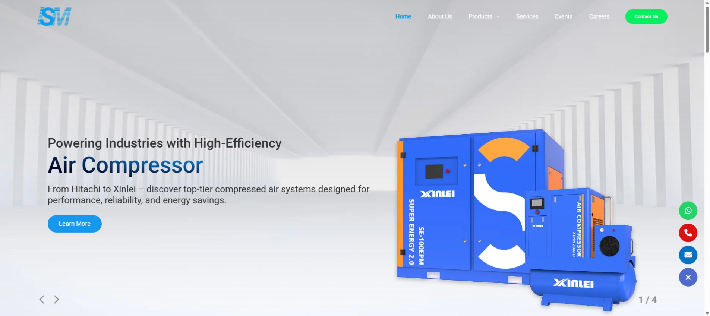
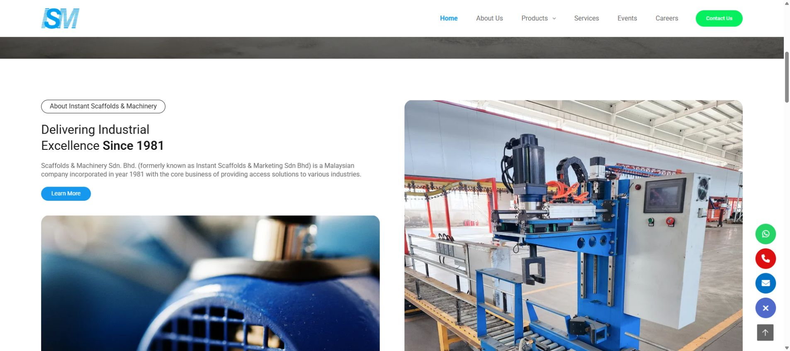

SELECTED WORK / 01WORDPRESS


Interior design
WordPress development01
Homlux
A WordPress website for an interior design company, with large project visuals and a focus on showcasing their spaces.
I turn design ideas into responsive websites, research animations that fit their purpose, and connect development with SEO and practical AI workflows.

A few WordPress websites I’ve worked on, from company profiles to custom booking features.


A WordPress website for an interior design company, with large project visuals and a focus on showcasing their spaces.


A WordPress website bringing together the company profile, door collections, services and completed projects.


A beauty and wellness website built with WordPress. I also developed a custom appointment booking plugin for the service pages.


A corporate WordPress website showcasing industrial equipment, product categories and the company’s services.
I can own the work from initial build through launch, analytics and day-to-day technical support.
WordPress, WooCommerce, PHP, JavaScript and responsive frontend implementation for business websites.
Website audits, keyword research, on-page and technical SEO, AEO/GEO foundations, Google Analytics and Tag Manager.
Domains, DNS, SSL, cPanel, VPS, professional email and troubleshooting after the site goes live.
Working closely with designers to translate visual concepts into interactions. Researching effects that suit each website’s brand, content and purpose.
Developing AI-powered tools and workflows, using coding assistants for implementation, troubleshooting and content production.
Mentoring junior developers, reviewing code and coordinating with designers from concept to launch.
I am developing a WhatsApp receptionist with business knowledge retrieval, booking workflows, explicit customer confirmation and human handoff. This is an independent development project, not a publicly launched service.
Tell me about the role, project or technical problem you are working through.